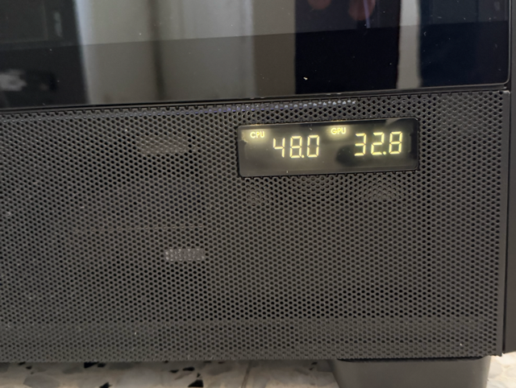

FOR ANTEC FLUX PRO
Antec Display
Driver
Open-source replacement for Antec iUnity.
No freezes. No bloat. Just temperatures.
Stable - won't crash like iUnity
~250 lines of pure PowerShell
Real CPU + GPU sensor readings
One-click installer